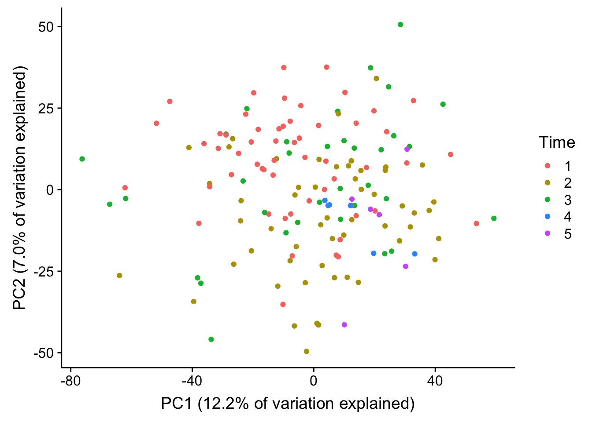
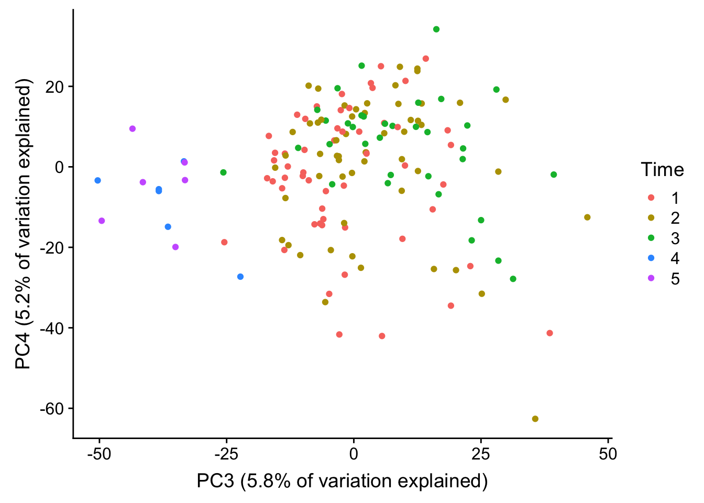
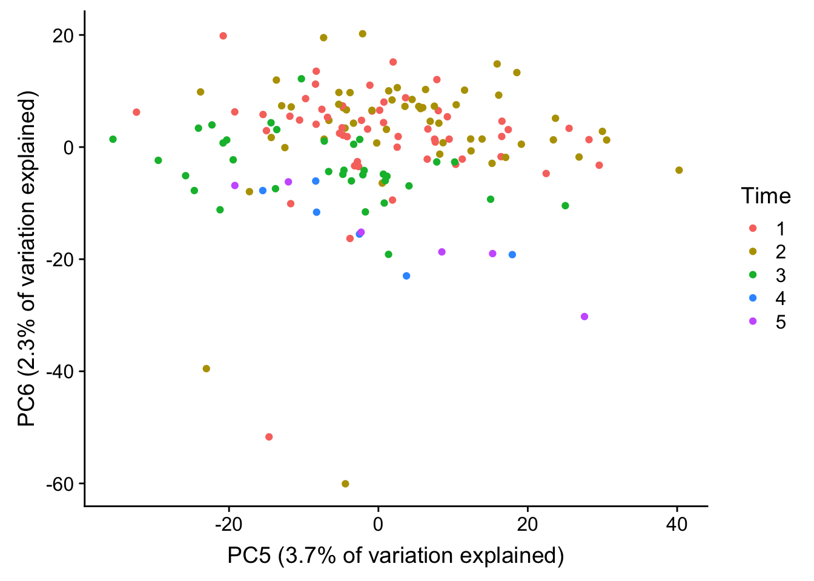
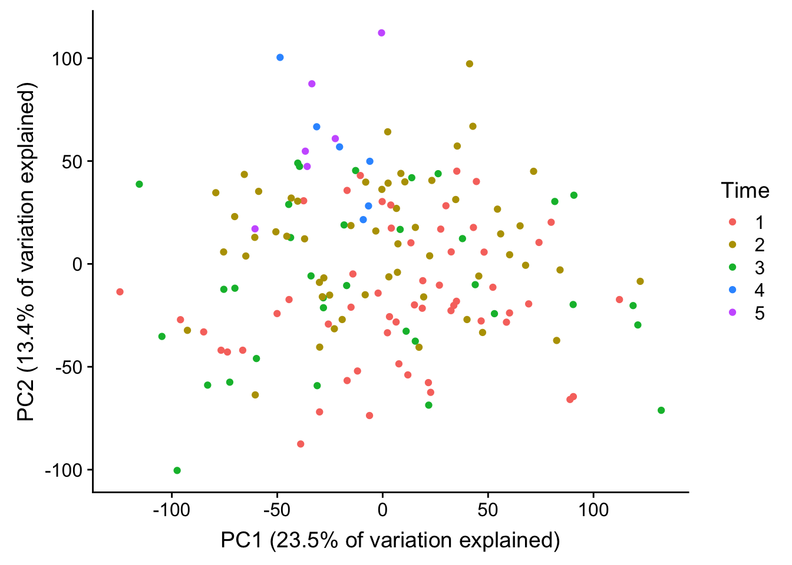

Last updated: 2018-08-28
workflowr checks: (Click a bullet for more information) ✖ R Markdown file: uncommitted changes
The R Markdown is untracked by Git. To know which version of the R Markdown file created these results, you’ll want to first commit it to the Git repo. If you’re still working on the analysis, you can ignore this warning. When you’re finished, you can run wflow_publish to commit the R Markdown file and build the HTML.
✔ Environment: empty
Great job! The global environment was empty. Objects defined in the global environment can affect the analysis in your R Markdown file in unknown ways. For reproduciblity it’s best to always run the code in an empty environment.
✔ Seed:
set.seed(12345)
The command set.seed(12345) was run prior to running the code in the R Markdown file. Setting a seed ensures that any results that rely on randomness, e.g. subsampling or permutations, are reproducible.
✔ Session information: recorded
Great job! Recording the operating system, R version, and package versions is critical for reproducibility.
✔ Repository version: 241c630
wflow_publish or wflow_git_commit). workflowr only checks the R Markdown file, but you know if there are other scripts or data files that it depends on. Below is the status of the Git repository when the results were generated:
Ignored files:
Ignored: .DS_Store
Ignored: analysis/.DS_Store
Ignored: data/.DS_Store
Ignored: data/aux_info/
Ignored: data/hg_38/
Ignored: data/libParams/
Ignored: output/.DS_Store
Untracked files:
Untracked: _workflowr.yml
Untracked: analysis/Collection_dates.Rmd
Untracked: analysis/Converting_IDs.Rmd
Untracked: analysis/Global_variation.Rmd
Untracked: analysis/Preliminary_clinical_covariate.Rmd
Untracked: analysis/VennDiagram2018-07-24_06-55-46.log
Untracked: analysis/VennDiagram2018-07-24_06-56-13.log
Untracked: analysis/VennDiagram2018-07-24_06-56-50.log
Untracked: analysis/VennDiagram2018-07-24_06-58-41.log
Untracked: analysis/VennDiagram2018-07-24_07-00-07.log
Untracked: analysis/VennDiagram2018-07-24_07-00-42.log
Untracked: analysis/VennDiagram2018-07-24_07-01-08.log
Untracked: analysis/VennDiagram2018-08-17_15-13-24.log
Untracked: analysis/VennDiagram2018-08-17_15-13-30.log
Untracked: analysis/VennDiagram2018-08-17_15-15-06.log
Untracked: analysis/VennDiagram2018-08-17_15-16-01.log
Untracked: analysis/VennDiagram2018-08-17_15-17-51.log
Untracked: analysis/VennDiagram2018-08-17_15-18-42.log
Untracked: analysis/VennDiagram2018-08-17_15-19-21.log
Untracked: analysis/VennDiagram2018-08-20_09-07-57.log
Untracked: analysis/VennDiagram2018-08-20_09-08-37.log
Untracked: analysis/VennDiagram2018-08-26_19-54-03.log
Untracked: analysis/VennDiagram2018-08-26_20-47-08.log
Untracked: analysis/VennDiagram2018-08-26_20-49-49.log
Untracked: analysis/VennDiagram2018-08-27_00-04-36.log
Untracked: analysis/VennDiagram2018-08-27_00-09-27.log
Untracked: analysis/VennDiagram2018-08-27_00-13-57.log
Untracked: analysis/VennDiagram2018-08-27_00-16-32.log
Untracked: analysis/VennDiagram2018-08-27_10-00-25.log
Untracked: analysis/VennDiagram2018-08-28_06-03-13.log
Untracked: analysis/VennDiagram2018-08-28_06-03-14.log
Untracked: analysis/VennDiagram2018-08-28_06-05-50.log
Untracked: analysis/VennDiagram2018-08-28_06-06-58.log
Untracked: analysis/VennDiagram2018-08-28_06-10-12.log
Untracked: analysis/VennDiagram2018-08-28_06-10-13.log
Untracked: analysis/VennDiagram2018-08-28_06-18-29.log
Untracked: analysis/VennDiagram2018-08-28_07-22-26.log
Untracked: analysis/VennDiagram2018-08-28_07-22-27.log
Untracked: analysis/background_dds_david.csv
Untracked: analysis/correlations_bet_covariates.Rmd
Untracked: analysis/correlations_over_time.Rmd
Untracked: analysis/genocode_annotation_info.Rmd
Untracked: analysis/genotypes.Rmd
Untracked: analysis/import_transcript_level_estimates.Rmd
Untracked: analysis/test_dds_david.csv
Untracked: analysis/variables_by_time.Rmd
Untracked: analysis/voom_limma.Rmd
Untracked: analysis/voom_limma_hg37.Rmd
Untracked: analysis/voom_limma_weight_change.Rmd
Untracked: data/BAN2 Dates_T1_T2.xlsx
Untracked: data/BAN_DATES.csv
Untracked: data/BAN_DATES.xlsx
Untracked: data/BAN_DATES_txt.csv
Untracked: data/Ban_geno.csv
Untracked: data/Ban_geno.xlsx
Untracked: data/Blood_dates.txt
Untracked: data/DAVID_background.txt
Untracked: data/DAVID_list_T1T2.txt
Untracked: data/DAVID_list_T1T2_weight.txt
Untracked: data/DAVID_list_T2T3.txt
Untracked: data/DAVID_list_T2T3_weight.txt
Untracked: data/DAVID_results/
Untracked: data/DAVID_top100_list_T1T2.txt
Untracked: data/DAVID_top100_list_T1T2_weight.txt
Untracked: data/DAVID_top100_list_T2T3.txt
Untracked: data/DAVID_top100_list_T2T3_weight.txt
Untracked: data/Eigengenes/
Untracked: data/FemaleWeightRestoration-01-dataInput.RData
Untracked: data/FemaleWeightRestoration-resid-01-dataInput.RData
Untracked: data/FemaleWeightRestoration-resid-T1T2-01-dataInput.RData
Untracked: data/HTSF_IDs.sav
Untracked: data/Homo_sapiens.GRCh38.v22_table.txt
Untracked: data/Labels.csv
Untracked: data/Labels.xlsx
Untracked: data/RIN.xlsx
Untracked: data/RIN_over_time.csv
Untracked: data/RIN_over_time.xlsx
Untracked: data/T0_consolid.csv
Untracked: data/T0_consolid.xlsx
Untracked: data/age_t1.txt
Untracked: data/birthday_age.csv
Untracked: data/birthday_age.xlsx
Untracked: data/clinical_sample_info.csv
Untracked: data/clinical_sample_info_geno.csv
Untracked: data/cmd_info.json
Untracked: data/counts_hg37_gc_txsalmon.RData
Untracked: data/counts_hg38_gc.RData
Untracked: data/counts_hg38_gc_dds.RData
Untracked: data/counts_hg38_gc_txsalmon.RData
Untracked: data/covar_lm.csv
Untracked: data/covar_lm_missing.csv
Untracked: data/eigengenes_T1_T2_cov_adj_exp_5_modules.txt
Untracked: data/eigengenes_T1_T2_module_background.txt
Untracked: data/eigengenes_adj_exp_7_modules.txt
Untracked: data/eigengenes_cov_adj_exp_14_modules.txt
Untracked: data/eigengenes_module_background.txt
Untracked: data/eigengenes_unadj_exp_10_modules.txt
Untracked: data/eigengenes_unadj_exp_6_modules.txt
Untracked: data/eigengenes_unadj_exp_9_modules.txt
Untracked: data/files_list.txt
Untracked: data/final_covariates.csv
Untracked: data/gene_exp_values_2202.txt
Untracked: data/gene_exp_values_2209.txt
Untracked: data/gene_exp_values_2218.txt
Untracked: data/gene_exp_values_2220.txt
Untracked: data/gene_exp_values_2226.txt
Untracked: data/gene_exp_values_2228.txt
Untracked: data/gene_expression_filtered_T1T5.csv
Untracked: data/gene_names_58387.txt
Untracked: data/gene_to_tran.txt
Untracked: data/lm_covar_fixed_random.csv
Untracked: data/lm_covar_fixed_random_geno.csv
Untracked: data/logs/
Untracked: data/module_T1T2_cov_adj_blue.txt
Untracked: data/module_T1T2_cov_adj_brown.txt
Untracked: data/module_T1T2_cov_adj_turquoise.txt
Untracked: data/module_T1T2_cov_adj_yellow.txt
Untracked: data/module_adj_cov_merged_blue.txt
Untracked: data/module_adj_cov_merged_brown.txt
Untracked: data/module_adj_cov_merged_cyan.txt
Untracked: data/module_adj_cov_merged_green.txt
Untracked: data/module_adj_cov_merged_greenyellow.txt
Untracked: data/module_adj_cov_merged_magenta.txt
Untracked: data/module_adj_cov_merged_red.txt
Untracked: data/module_adj_cov_merged_salmon.txt
Untracked: data/module_adj_cov_merged_tan.txt
Untracked: data/module_adj_cov_merged_yellow.txt
Untracked: data/module_black.txt
Untracked: data/module_blue.txt
Untracked: data/module_brown.txt
Untracked: data/module_cov_adj_black.txt
Untracked: data/module_cov_adj_blue.txt
Untracked: data/module_cov_adj_brown.txt
Untracked: data/module_cov_adj_cyan.txt
Untracked: data/module_cov_adj_green.txt
Untracked: data/module_cov_adj_greenyellow.txt
Untracked: data/module_cov_adj_magenta.txt
Untracked: data/module_cov_adj_pink.txt
Untracked: data/module_cov_adj_purple.txt
Untracked: data/module_cov_adj_red.txt
Untracked: data/module_cov_adj_salmon.txt
Untracked: data/module_cov_adj_tan.txt
Untracked: data/module_cov_adj_turquoise.txt
Untracked: data/module_cov_adj_yellow.txt
Untracked: data/module_cyan.txt
Untracked: data/module_green.txt
Untracked: data/module_greenyellow.txt
Untracked: data/module_magenta.txt
Untracked: data/module_merged_black.txt
Untracked: data/module_merged_blue.txt
Untracked: data/module_merged_brown.txt
Untracked: data/module_merged_cyan.txt
Untracked: data/module_merged_green.txt
Untracked: data/module_merged_greenyellow.txt
Untracked: data/module_merged_magenta.txt
Untracked: data/module_merged_pink.txt
Untracked: data/module_merged_purple.txt
Untracked: data/module_merged_red.txt
Untracked: data/module_merged_salmon.txt
Untracked: data/module_merged_tan.txt
Untracked: data/module_merged_turquoise.txt
Untracked: data/module_merged_yellow.txt
Untracked: data/module_pink.txt
Untracked: data/module_purple.txt
Untracked: data/module_red.txt
Untracked: data/module_salmon.txt
Untracked: data/module_tan.txt
Untracked: data/module_turquoise.txt
Untracked: data/module_yellow.txt
Untracked: data/notimecovariates.csv
Untracked: data/only_individuals_biomarkers_weight_restoration_study.xlsx
Untracked: data/pcs_genes.csv
Untracked: data/pcs_genes.txt
Untracked: data/rest1t2_BI_hg37.rds
Untracked: data/rest1t2_BI_hg38.rds
Untracked: data/rest1t2_hg37.rds
Untracked: data/rest1t2_psych_meds_BMI_hg37.rds
Untracked: data/rest1t2_psych_meds_hg37.rds
Untracked: data/rest2t3_BI_hg37.rds
Untracked: data/rest2t3_BI_hg38.rds
Untracked: data/rest2t3_hg37.rds
Untracked: data/rest2t3_psych_meds_BMI_hg37.rds
Untracked: data/rest2t3_psych_meds_hg37.rds
Untracked: data/salmon_gene_matrix_bak_reorder_time.txt
Untracked: data/technical_sample_info.csv
Untracked: data/tx_to_gene.txt
Untracked: data/tx_to_gene_37.txt
Untracked: data/usa2.pcawithref.menv.mds_cov
Untracked: data/vsd_values_hg38_gc.rds
Untracked: data/~$Labels.xlsx
Untracked: data/~$T0_consolid.xlsx
Untracked: docs/VennDiagram2018-07-24_06-55-46.log
Untracked: docs/VennDiagram2018-07-24_06-56-13.log
Untracked: docs/VennDiagram2018-07-24_06-56-50.log
Untracked: docs/VennDiagram2018-07-24_06-58-41.log
Untracked: docs/VennDiagram2018-07-24_07-00-07.log
Untracked: docs/VennDiagram2018-07-24_07-00-42.log
Untracked: docs/VennDiagram2018-07-24_07-01-08.log
Untracked: docs/figure/
Unstaged changes:
Modified: analysis/_site.yml
Modified: analysis/about.Rmd
Deleted: analysis/chunks.R
Modified: analysis/index.Rmd
Modified: analysis/license.Rmd
The goal of this analysis is to get a sense of the distributions of the clinical covariates versus PCs.
# Import libraries
library("ggplot2")Warning: package 'ggplot2' was built under R version 3.4.4library("cowplot")Warning: package 'cowplot' was built under R version 3.4.4
Attaching package: 'cowplot'The following object is masked from 'package:ggplot2':
ggsave# Import normalized
vsd <- readRDS("../data/vsd_values_hg38_gc.rds")
# Import covariates
current_covar <- read.csv("../data/final_covariates.csv")cor(current_covar, use = "pairwise.complete.obs") Individual Time Age BE BE2
Individual 1.000000000 -0.20529652 -0.07124497 0.027951934 0.002909317
Time -0.205296522 1.00000000 0.22375716 -0.216151271 -0.127430369
Age -0.071244969 0.22375716 1.00000000 -0.026470963 0.064582203
BE 0.027951934 -0.21615127 -0.02647096 1.000000000 0.444676716
BE2 0.002909317 -0.12743037 0.06458220 0.444676716 1.000000000
BINGE -0.015083440 -0.13384828 -0.03953909 0.681582756 0.852597840
PURGE 0.096604076 -0.14766335 0.32064277 0.451738265 0.286962511
BE_LOC -0.022067995 -0.09815982 0.03376479 0.313859431 0.926618618
BE_GROUP 0.002909317 -0.12743037 0.06458220 0.444676716 1.000000000
psychmeds -0.107037917 0.29481716 0.16267900 -0.044548762 0.034691793
hormone 0.124771936 0.04967288 0.09833649 0.006915490 -0.114884094
vitsupp -0.014284913 -0.07394186 0.18542935 -0.032274861 0.071888515
RBC 0.212061660 0.15192523 -0.22069820 -0.020585783 -0.237172340
Platelet -0.079659095 0.02321333 0.28996646 0.104353804 0.191133750
AN 0.190468866 0.15740688 0.09756352 -0.221478944 -0.089544074
AM 0.175645177 0.08009034 -0.01911023 -0.225670055 -0.026020508
AE -0.008612723 0.11750455 -0.02118812 -0.062991010 0.154292418
AB -0.018133260 0.06835241 0.08841546 -0.017197979 0.072392563
AL 0.166232036 -0.11173816 -0.29753372 0.006979556 0.066654050
Race 0.100788050 -0.04618686 -0.06140769 0.191194661 0.003960912
Ethnicity 0.102188475 0.01116936 0.12974476 0.053709476 -0.051798463
RIN 0.050114754 0.18401382 -0.16548764 -0.129791819 -0.120707712
BINGE PURGE BE_LOC BE_GROUP
Individual -1.508344e-02 0.096604076 -0.02206800 0.002909317
Time -1.338483e-01 -0.147663351 -0.09815982 -0.127430369
Age -3.953909e-02 0.320642768 0.03376479 0.064582203
BE 6.815828e-01 0.451738265 0.31385943 0.444676716
BE2 8.525978e-01 0.286962511 0.92661862 1.000000000
BINGE 1.000000e+00 0.302735102 0.79003303 0.852597840
PURGE 3.027351e-01 1.000000000 0.18596151 0.286962511
BE_LOC 7.900330e-01 0.185961506 1.00000000 0.926618618
BE_GROUP 8.525978e-01 0.286962511 0.92661862 1.000000000
psychmeds -4.257542e-02 0.010276279 0.04865507 0.034691793
hormone -8.300066e-02 0.103732356 -0.09450041 -0.114884094
vitsupp 2.773482e-21 0.193649167 0.06657163 0.071888515
RBC -1.686571e-01 -0.022974100 -0.21695813 -0.237172340
Platelet 8.560655e-02 0.097858865 0.14594869 0.191133750
AN -1.704873e-01 -0.060750537 -0.06426594 -0.089544074
AM -9.505118e-02 -0.088347076 0.03906042 -0.026020508
AE 1.130473e-01 -0.001172845 0.13403349 0.154292418
AB 9.725433e-02 0.048002876 0.10328192 0.072392563
AL 6.930947e-02 -0.042832896 0.05715916 0.066654050
Race 1.185920e-01 0.018384733 -0.02001957 0.003960912
Ethnicity -1.781375e-02 0.059418675 -0.01936030 -0.051798463
RIN -7.091858e-02 -0.204416367 -0.08093941 -0.120707712
psychmeds hormone vitsupp RBC
Individual -0.107037917 0.12477194 -1.428491e-02 0.21206166
Time 0.294817159 0.04967288 -7.394186e-02 0.15192523
Age 0.162678997 0.09833649 1.854294e-01 -0.22069820
BE -0.044548762 0.00691549 -3.227486e-02 -0.02058578
BE2 0.034691793 -0.11488409 7.188852e-02 -0.23717234
BINGE -0.042575417 -0.08300066 2.773482e-21 -0.16865710
PURGE 0.010276279 0.10373236 1.936492e-01 -0.02297410
BE_LOC 0.048655069 -0.09450041 6.657163e-02 -0.21695813
BE_GROUP 0.034691793 -0.11488409 7.188852e-02 -0.23717234
psychmeds 1.000000000 0.02350382 9.671127e-02 -0.03149670
hormone 0.023503822 1.00000000 5.751685e-02 0.08329990
vitsupp 0.096711270 0.05751685 1.000000e+00 -0.14367734
RBC -0.031496696 0.08329990 -1.436773e-01 1.00000000
Platelet 0.048511343 0.06044223 8.382813e-02 -0.21382126
AN -0.001656212 0.18825240 1.108633e-01 0.12126713
AM 0.018300972 0.01282153 1.201704e-01 -0.01648602
AE 0.057119766 -0.07641714 -2.674122e-02 0.01716806
AB -0.166680716 0.13937815 9.588570e-02 0.18903872
AL -0.048177612 0.19051286 -2.039437e-02 0.22694605
Race -0.033029634 -0.08238586 7.368256e-02 0.02350421
Ethnicity 0.155279503 0.07745967 -4.539983e-02 0.02656830
RIN -0.075126920 0.04755243 -9.206353e-02 0.10949933
Platelet AN AM AE
Individual -0.0796590946 0.190468866 0.175645177 -0.008612723
Time 0.0232133296 0.157406881 0.080090339 0.117504551
Age 0.2899664618 0.097563516 -0.019110233 -0.021188121
BE 0.1043538038 -0.221478944 -0.225670055 -0.062991010
BE2 0.1911337496 -0.089544074 -0.026020508 0.154292418
BINGE 0.0856065457 -0.170487277 -0.095051179 0.113047345
PURGE 0.0978588654 -0.060750537 -0.088347076 -0.001172845
BE_LOC 0.1459486886 -0.064265943 0.039060417 0.134033486
BE_GROUP 0.1911337496 -0.089544074 -0.026020508 0.154292418
psychmeds 0.0485113434 -0.001656212 0.018300972 0.057119766
hormone 0.0604422301 0.188252402 0.012821528 -0.076417135
vitsupp 0.0838281272 0.110863266 0.120170357 -0.026741218
RBC -0.2138212598 0.121267133 -0.016486023 0.017168064
Platelet 1.0000000000 0.125683411 0.131298464 0.257449098
AN 0.1256834112 1.000000000 0.569073445 0.101804831
AM 0.1312984636 0.569073445 1.000000000 0.276096847
AE 0.2574490984 0.101804831 0.276096847 1.000000000
AB 0.1176324223 0.306495648 0.234948567 0.029327162
AL 0.0005714077 0.149314171 0.254184381 0.072083836
Race 0.1116014150 0.058296413 -0.001930929 0.080435263
Ethnicity -0.1641295338 0.112299008 0.088177142 -0.004183734
RIN -0.0384544296 0.069099600 0.011827417 -0.281114907
AB AL Race Ethnicity RIN
Individual -0.01813326 0.1662320356 0.100788050 0.102188475 0.05011475
Time 0.06835241 -0.1117381615 -0.046186859 0.011169357 0.18401382
Age 0.08841546 -0.2975337171 -0.061407687 0.129744757 -0.16548764
BE -0.01719798 0.0069795562 0.191194661 0.053709476 -0.12979182
BE2 0.07239256 0.0666540504 0.003960912 -0.051798463 -0.12070771
BINGE 0.09725433 0.0693094683 0.118592002 -0.017813751 -0.07091858
PURGE 0.04800288 -0.0428328962 0.018384733 0.059418675 -0.20441637
BE_LOC 0.10328192 0.0571591626 -0.020019572 -0.019360304 -0.08093941
BE_GROUP 0.07239256 0.0666540504 0.003960912 -0.051798463 -0.12070771
psychmeds -0.16668072 -0.0481776121 -0.033029634 0.155279503 -0.07512692
hormone 0.13937815 0.1905128633 -0.082385865 0.077459667 0.04755243
vitsupp 0.09588570 -0.0203943699 0.073682563 -0.045399826 -0.09206353
RBC 0.18903872 0.2269460476 0.023504206 0.026568304 0.10949933
Platelet 0.11763242 0.0005714077 0.111601415 -0.164129534 -0.03845443
AN 0.30649565 0.1493141712 0.058296413 0.112299008 0.06909960
AM 0.23494857 0.2541843807 -0.001930929 0.088177142 0.01182742
AE 0.02932716 0.0720838358 0.080435263 -0.004183734 -0.28111491
AB 1.00000000 0.1060716512 -0.133370974 0.015460343 0.15596969
AL 0.10607165 1.0000000000 0.046632986 -0.117735266 0.25645076
Race -0.13337097 0.0466329865 1.000000000 0.042532872 0.12450413
Ethnicity 0.01546034 -0.1177352658 0.042532872 1.000000000 -0.09545235
RIN 0.15596969 0.2564507597 0.124504130 -0.095452354 1.00000000vsd <- as.data.frame(vsd)
pca_genes <- prcomp(t(vsd), center = TRUE)
scores <- as.data.frame(pca_genes$x)
# PCs 1+2
norm_count <- ggplot(data=scores, aes(x=PC1, y=PC2, color=factor(current_covar$Time))) + geom_point() + scale_color_discrete(name = "Time") + xlab("PC1 (12.2% of variation explained)") + ylab("PC2 (7.0% of variation explained)") + scale_colour_manual(name = "Time", values=c("#F8766D", "#B79F00", "#00BA38", "#3399FF", "#CC66FF"))Scale for 'colour' is already present. Adding another scale for
'colour', which will replace the existing scale.plot_grid(norm_count)
#save_plot("/Users/laurenblake/Dropbox/Lauren Blake/Figures/Hg38_PC12.png", norm_count,
# base_aspect_ratio = 1)
# PCs 3 + 4
norm_count <- ggplot(data=scores, aes(x=PC3, y=PC4, color=factor(current_covar$Time))) + geom_point() + scale_color_discrete(name = "Time") + xlab("PC3 (5.8% of variation explained)") + ylab("PC4 (5.2% of variation explained)") + scale_colour_manual(name = "Time", values=c("#F8766D", "#B79F00", "#00BA38", "#3399FF", "#CC66FF"))Scale for 'colour' is already present. Adding another scale for
'colour', which will replace the existing scale.plot_grid(norm_count)
#save_plot("/Users/laurenblake/Dropbox/Lauren Blake/Figures/Hg38_PC34.png", norm_count,
# base_aspect_ratio = 1)
# PCs 5+6
norm_count <- ggplot(data=scores, aes(x=PC5, y=PC6, color=factor(current_covar$Time))) + geom_point() + scale_color_discrete(name = "Time") + xlab("PC5 (3.7% of variation explained)") + ylab("PC6 (2.3% of variation explained)") + scale_colour_manual(name = "Time", values=c("#F8766D", "#B79F00", "#00BA38", "#3399FF", "#CC66FF"))Scale for 'colour' is already present. Adding another scale for
'colour', which will replace the existing scale.plot_grid(norm_count)
#save_plot("/Users/laurenblake/Dropbox/Lauren Blake/Figures/Hg38_PC56.png", norm_count,
# base_aspect_ratio = 1)
# Numeric covariates
num_val <- c(3, 13:19)
current_covar_num <- current_covar[,num_val]
# Categorical covariates
cat_val <- c(1:2, 4:12)
current_covar_cat <- current_covar[,cat_val]
# PCs versus numerical
PC_pvalues_day = matrix(data = NA, nrow = 5, ncol = 8, dimnames = list(c("PC1", "PC2", "PC3", "PC4", "PC5"), c("Age", "RBC", "Platelet", "AN", "AM", "AE", "AB", "AL")))
pvalues_day = matrix(data = NA, nrow = 5, ncol = 8, dimnames = list(c("PC1", "PC2", "PC3", "PC4", "PC5"), c("Age", "RBC", "Platelet", "AN", "AM", "AE", "AB", "AL")))
for(j in 1: length(num_val)){
for(i in 1:5){
# PC versus time
checkPC1 <- lm(scores[,i] ~ current_covar_num[,j])
#Get the summary statistics from it
summary(checkPC1)
#Get the p-value of the F-statistic
summary(checkPC1)$fstatistic
fstat <- as.data.frame(summary(checkPC1)$fstatistic)
p_fstat <- 1-pf(fstat[1,], fstat[2,], fstat[3,])
pvalues_day[i,j] <- p_fstat
#Fraction of the variance explained by the model
r_value <- summary(checkPC1)$r.squared
PC_pvalues_day[i,j] <- sqrt(summary(checkPC1)$r.squared)
}
}
# PCs versus categorical
PC_pvalues_day = matrix(data = NA, nrow = 5, ncol = 11, dimnames = list(c("PC1", "PC2", "PC3", "PC4", "PC5"), c("Individual", "Time", "BE", "BE2", "BINGE", "PURGE", "BE_LOCAL", "BE_GROUP", "Psych_meds", "Hormone", "VitSupp")))
pvalues_day = matrix(data = NA, nrow = 5, ncol = 11, dimnames = list(c("PC1", "PC2", "PC3", "PC4", "PC5"), c("Individual", "Time", "BE", "BE2", "BINGE", "PURGE", "BE_LOCAL", "BE_GROUP", "Psych_meds", "Hormone", "VitSupp")))
for(j in 1: length(cat_val)){
for(i in 1:5){
# PC versus time
checkPC1 <- lm(scores[,i] ~ current_covar_cat[,j])
#Get the summary statistics from it
summary(checkPC1)
#Get the p-value of the F-statistic
summary(checkPC1)$fstatistic
fstat <- as.data.frame(summary(checkPC1)$fstatistic)
p_fstat <- 1-pf(fstat[1,], fstat[2,], fstat[3,])
pvalues_day[i,j] <- p_fstat
#Fraction of the variance explained by the model
r_value <- summary(checkPC1)$r.squared
PC_pvalues_day[i,j] <- sqrt(summary(checkPC1)$r.squared)
}
}
PC_pvalues_day = matrix(data = 0, nrow = 5, ncol = 19, dimnames = list(c("PC1", "PC2", "PC3", "PC4", "PC5"), c("Individual", "Time", "Age", "BE", "BE2", "BINGE", "PURGE", "BE_LOC", "BE_GROUP", "psychmeds", "hormone", "vitsupp", "RBC", "Platelet", "AN", "AM", "AE", "AB", "AL")))
i = 1
j = 1
for(j in 1:19){
i = 1
for(i in 1:5){
PC_pvalues_day[i,j] <- cor(scores[,i], current_covar[,j], use = "pairwise.complete.obs")
# print(i)
# print(j)
}
}
# Race and ethnicity
PC_pvalues_day = matrix(data = NA, nrow = 5, ncol = 2, dimnames = list(c("PC1", "PC2", "PC3", "PC4", "PC5"), c("Race", "Ethnicity")))
pvalues_day = matrix(data = NA, nrow = 5, ncol = 2, dimnames = list(c("PC1", "PC2", "PC3", "PC4", "PC5"), c("Race", "Ethnicity")))
for(j in 20:21){
for(i in 1:5){
# PC versus time
checkPC1 <- lm(scores[,i] ~ as.factor(current_covar[,j]))
#Get the summary statistics from it
summary(checkPC1)
#Get the p-value of the F-statistic
summary(checkPC1)$fstatistic
fstat <- as.data.frame(summary(checkPC1)$fstatistic)
p_fstat <- 1-pf(fstat[1,], fstat[2,], fstat[3,])
pvalues_day[i,j-19] <- p_fstat
#Fraction of the variance explained by the model
r_value <- summary(checkPC1)$r.squared
PC_pvalues_day[i,j-19] <- sqrt(summary(checkPC1)$r.squared)
}
}
# RIN
PC_pvalues_day = matrix(data = NA, nrow = 5, ncol = 1, dimnames = list(c("PC1", "PC2", "PC3", "PC4", "PC5"), c("RIN")))
pvalues_day = matrix(data = NA, nrow = 5, ncol = 1, dimnames = list(c("PC1", "PC2", "PC3", "PC4", "PC5"), c("RIN")))
for(j in 22){
for(i in 1:5){
# PC versus time
checkPC1 <- lm(scores[,i] ~ current_covar[,j])
#Get the summary statistics from it
summary(checkPC1)
#Get the p-value of the F-statistic
summary(checkPC1)$fstatistic
fstat <- as.data.frame(summary(checkPC1)$fstatistic)
p_fstat <- 1-pf(fstat[1,], fstat[2,], fstat[3,])
pvalues_day[i,j-21] <- p_fstat
#Fraction of the variance explained by the model
r_value <- summary(checkPC1)$r.squared
PC_pvalues_day[i,j-21] <- sqrt(summary(checkPC1)$r.squared)
}
}# Load gene expression data from all 156 samples
normalized_data <- read.csv("../data/gene_expression_filtered_T1T5.csv")
# Run PCA on the normalized data
pca_genes <- prcomp(t(normalized_data[,2:157]), scale = TRUE, center = TRUE)
matrixpca <- pca_genes$x
PC1 <- matrixpca[,1]
PC2 <- matrixpca[,2]
pc3 <- matrixpca[,3]
pc4 <- matrixpca[,4]
pc5 <- matrixpca[,5]
matrixpca <- as.data.frame(matrixpca)
summary <- summary(pca_genes)
head(summary$importance[2,1:5]) PC1 PC2 PC3 PC4 PC5
0.23496 0.13460 0.09950 0.05124 0.03724 # PCs 1+2
norm_count <- ggplot(data=scores, aes(x=PC1, y=PC2, color=factor(current_covar$Time))) + geom_point() + scale_color_discrete(name = "Time") + xlab("PC1 (23.5% of variation explained)") + ylab("PC2 (13.4% of variation explained)") + scale_colour_manual(name = "Time", values=c("#F8766D", "#B79F00", "#00BA38", "#3399FF", "#CC66FF"))Scale for 'colour' is already present. Adding another scale for
'colour', which will replace the existing scale.plot_grid(norm_count)
#save_plot("/Users/laurenblake/Dropbox/Lauren Blake/Figures/Hg38_PC12_BI.png", norm_count,
# base_aspect_ratio = 1)
# PCs versus numerical
PC_pvalues_day = matrix(data = NA, nrow = 5, ncol = 8, dimnames = list(c("PC1", "PC2", "PC3", "PC4", "PC5"), c("Age", "RBC", "Platelet", "AN", "AM", "AE", "AB", "AL")))
pvalues_day = matrix(data = NA, nrow = 5, ncol = 8, dimnames = list(c("PC1", "PC2", "PC3", "PC4", "PC5"), c("Age", "RBC", "Platelet", "AN", "AM", "AE", "AB", "AL")))
for(j in 1: length(num_val)){
for(i in 1:5){
# PC versus time
checkPC1 <- lm(scores[,i] ~ current_covar_num[,j])
#Get the summary statistics from it
summary(checkPC1)
#Get the p-value of the F-statistic
summary(checkPC1)$fstatistic
fstat <- as.data.frame(summary(checkPC1)$fstatistic)
p_fstat <- 1-pf(fstat[1,], fstat[2,], fstat[3,])
pvalues_day[i,j] <- p_fstat
#Fraction of the variance explained by the model
r_value <- summary(checkPC1)$r.squared
PC_pvalues_day[i,j] <- sqrt(summary(checkPC1)$r.squared)
}
}
head(r_value)[1] 0.00554918# PCs versus categorical
PC_pvalues_day = matrix(data = NA, nrow = 5, ncol = 11, dimnames = list(c("PC1", "PC2", "PC3", "PC4", "PC5"), c("Individual", "Time", "BE", "BE2", "BINGE", "PURGE", "BE_LOCAL", "BE_GROUP", "Psych_meds", "Hormone", "VitSupp")))
pvalues_day = matrix(data = NA, nrow = 5, ncol = 11, dimnames = list(c("PC1", "PC2", "PC3", "PC4", "PC5"), c("Individual", "Time", "BE", "BE2", "BINGE", "PURGE", "BE_LOCAL", "BE_GROUP", "Psych_meds", "Hormone", "VitSupp")))
for(j in 1: length(cat_val)){
for(i in 1:5){
# PC versus time
checkPC1 <- lm(scores[,i] ~ current_covar_cat[,j])
#Get the summary statistics from it
summary(checkPC1)
#Get the p-value of the F-statistic
summary(checkPC1)$fstatistic
fstat <- as.data.frame(summary(checkPC1)$fstatistic)
p_fstat <- 1-pf(fstat[1,], fstat[2,], fstat[3,])
pvalues_day[i,j] <- p_fstat
#Fraction of the variance explained by the model
r_value <- summary(checkPC1)$r.squared
PC_pvalues_day[i,j] <- sqrt(summary(checkPC1)$r.squared)
}
}
head(r_value)[1] 0.0003519459sessionInfo()R version 3.4.3 (2017-11-30)
Platform: x86_64-apple-darwin15.6.0 (64-bit)
Running under: OS X El Capitan 10.11.6
Matrix products: default
BLAS: /Library/Frameworks/R.framework/Versions/3.4/Resources/lib/libRblas.0.dylib
LAPACK: /Library/Frameworks/R.framework/Versions/3.4/Resources/lib/libRlapack.dylib
locale:
[1] en_US.UTF-8/en_US.UTF-8/en_US.UTF-8/C/en_US.UTF-8/en_US.UTF-8
attached base packages:
[1] stats graphics grDevices utils datasets methods base
other attached packages:
[1] cowplot_0.9.3 ggplot2_3.0.0
loaded via a namespace (and not attached):
[1] Rcpp_0.12.18 compiler_3.4.3 pillar_1.3.0
[4] git2r_0.23.0 plyr_1.8.4 workflowr_1.1.1
[7] bindr_0.1.1 R.methodsS3_1.7.1 R.utils_2.6.0
[10] tools_3.4.3 digest_0.6.16 evaluate_0.11
[13] tibble_1.4.2 gtable_0.2.0 pkgconfig_2.0.2
[16] rlang_0.2.2 yaml_2.2.0 bindrcpp_0.2.2
[19] withr_2.1.2 stringr_1.3.1 dplyr_0.7.6
[22] knitr_1.20 rprojroot_1.3-2 grid_3.4.3
[25] tidyselect_0.2.4 glue_1.3.0 R6_2.2.2
[28] rmarkdown_1.10 purrr_0.2.5 magrittr_1.5
[31] whisker_0.3-2 backports_1.1.2 scales_1.0.0
[34] htmltools_0.3.6 assertthat_0.2.0 colorspace_1.3-2
[37] labeling_0.3 stringi_1.2.4 lazyeval_0.2.1
[40] munsell_0.5.0 crayon_1.3.4 R.oo_1.22.0
This reproducible R Markdown analysis was created with workflowr 1.1.1